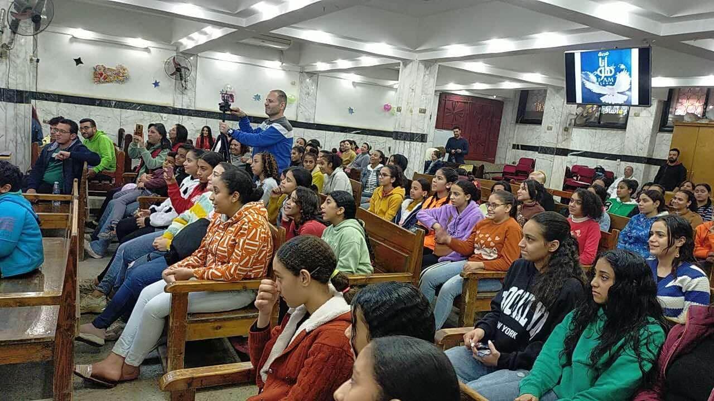

Daughters of Grace Ministry
is dedicated to empowering teenage girls in underprivileged areas through weekly preaching and discipleship programs. In addition to spiritual growth, the ministry provides crucial social and psychological support, focusing on cases of physical and substance abuse. Currently serving five regions within Greater Cairo, the ministry operates with a committed 17-member team of leaders and volunteers, working to bring hope and transformation to young girls in need.
